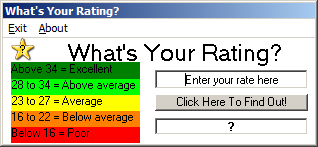

IWEB | Home | Programming | Legos | Electronics | Other Stuff | About
IWEB | Home | Programming | Legos | Electronics | Other Stuff | About
This is the programming section of my site. I do most of my programming in VB 6.0, QBasic 7.1, and SmallBasic.
This program was orginally an excel macro, but Visual Basic 6.0 made it simpler. I have no use for this program. The idea was from a Yahoo! Answers question asking for code to decide what rating is the given number. NOTE: This program is very buggy! Anyone who can help make the code better can email the new code to me at i.glen@inbox.com. Thanks for your support!
Programmed In: Visual Basic 6.0
Current Version: 1.0
Supported Platforms:

Download Exe File Download VB6.0 Source Code